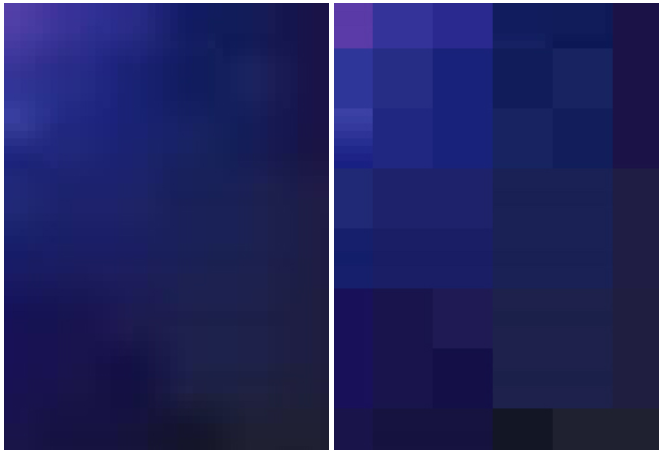

АКТУАЛЬНОЕ ТРЕБОВАНИЕ · УТОЧНЕНИЕ ЗАКАЗЧИКА ОТ 18.09.2026
Что требуется по блочности сейчас
- Требование к разрешению прежнее — HD (1280×720).
- Видео с самым высоким качеством и разрешением вставляем в поле 1.
- На блочности так тщательно больше не смотрим, но важно, чтобы видео по-прежнему не было откровенно битым — блоки, пикселизация или расслоения не должны сразу бросаться в глаза.
Подробный чек-лист и разобранные примеры ниже — прежний порядок проверки. Он больше не обязателен, но помогает понять, что считается «битым» видео, если вы сомневаетесь.
ТЕРМИН
Блочность
Артефакт сжатия видео (макроблоки, пикселизация): из-за нехватки битрейта кадр распадается на отчётливые квадратные сетки или пиксели вместо плавного изображения.

Слева — без блочности, справа — с блочностью (реальный пример из переписки с заказчиком).
СПРАВОЧНО · ПРЕЖНЕЕ ПРАВИЛО
Когда видео не подлежит сбору сразу
Если блочность есть на самом ГО (одежда, кожа, аксессуары) или на предмете, с которым ГО взаимодействует, — видео не подлежит сбору, дальше можно не проверять.
Если на ГО блочности нет — переходим к чек-листу ниже. Он про блочность на фоне / рядом с ГО.
СПРАВОЧНО · ПРЕЖНИЙ ЧЕК-ЛИСТ
Проверка по 5 пунктам
| # | Критерий | За разметку | Против разметки |
|---|---|---|---|
| 1 | Расположение в кадре | По краям / в углах | По центру кадра |
| 2 | Контрастность блоков | Тона близкие к фону | Контрастные по тону/цвету |
| 3 | Площадь | Меньше 5% кадра | Больше 5% кадра |
| 4 | Постоянство | Появляются и пропадают по ходу видео | Присутствуют на протяжении всего видео |
| 5 | Заметность | Не видны с первого раза | Заметны сразу |
Правило подсчёта: если по 3 из 5 пунктов ответ «против» — видео в работу не берём. Если «против» только 1, а остальные «за» — берём. Размер блоков значения не имеет.
СПРАВОЧНО · РАЗОБРАННЫЕ ПРИМЕРЫ
Проверка на практике
Мыльность («блочность») присутствует на фоне — в момент, когда движение руками показано крупным планом.
| # | Критерий | Оценка | Вердикт |
|---|---|---|---|
| 1 | Расположение | Не по центру | ✓ |
| 2 | Контрастность | Не контрастно | ✓ |
| 3 | Площадь | Больше 5% | ✕ |
| 4 | Постоянство | Не на протяжении всего видео | ✓ |
| 5 | Заметность | Заметны сразу | ✕ |
3 из 5 критериев — «за» разметку (только 2 «против»), значит видео проходит проверку на блочность.
Отведение ноги в сторону стоя — на самом ГО блочность почти незаметна, но на фоне (стена) обнаружено крупное расслоение.
| # | Критерий | Оценка | Вердикт |
|---|---|---|---|
| 1 | Расположение | По краям кадра | ✓ |
| 2 | Контрастность | Тона близки к фону | ✓ |
| 3 | Площадь | Больше 5% | ✕ |
| 4 | Постоянство | На протяжении всего видео | ✕ |
| 5 | Заметность | Заметны сразу | ✕ |
3 из 5 критериев — «против» разметки, значит видео не проходит проверку на блочность. Высокое заявленное разрешение (4K) не спасает: блочность оценивают по всему кадру, включая фон, а не только по формальному качеству видео.
FAQ
Разрешение и блочность — не одно и то же
Прежнее разъяснение заказчика: нет. В инструкции есть два разных пункта: один отвечает за разрешение, второй (этот чек-лист) — за качество изображения. По чек-листу нужно анализировать самое лучшее видео: если на ГО нет блочности — дальше проверяем весь кадр по чек-листу; если набралось 3 пункта «против» — видео по качеству не подходит. Остальные 4 видео так детально не проверяем — важно только, чтобы само действие было идентичным.
Видео с таким качеством и разрешением называется эталонным — по нему сверяют движения на остальных видео, и оно же идёт в поле 1.
Из проверки реальных заданий — так асессоры регулярно ошибались:
- «Видео имеет хорошее качество 720p и 1080p HD при переключении, что соответствует пункту ТЗ: разрешение HD (1280 на 720), думаю по блочности согласно ТЗ проходит»
- «5-е видео имеет очень хорошее качество 1080p HD, 1440p HD, 2160p 4K, что соответствует пункту ТЗ: разрешение HD, думаю по блочности согласно ТЗ проходит также»
На самом деле: переключаемое HD-качество говорит только о разрешении. Блочность — отдельная, самостоятельная проверка того же видео (сейчас нестрогая: видео просто не должно быть откровенно битым), и учитывать её нужно независимо от доступного разрешения.
Вывод: переключаемое HD-качество в видеоисточнике и отсутствие откровенной блочности — две независимые проверки. Один факт не гарантирует другой.